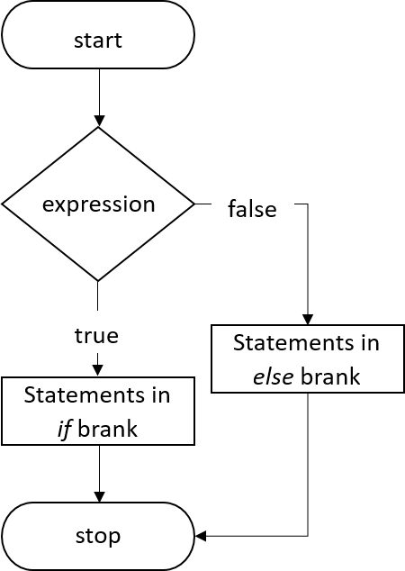

<!-- Page content-->
<div class="container mt-5">
    <div class="row">
        <div class="col">
            <!-- Post content-->
            <article>
                <!-- Post header-->

                <!-- Post content-->

                <section class="mb-5">

                    <p class="fs-5 mb-4">If else statements in C is also used to control the program flow based on some condition, only the difference is: it's used to execute some statement code block if the expression is evaluated to true, otherwise executes else statement code block.</p>
                    <p class="fs-5 mb-4"><u>The basic format of if else statement is:</u></p>
                    
                    <div class="card">
                        <div class="card-body">
                            <p class="outputTitle">Syntax:</p>
                            <script src="https://gist.github.com/ryy-clavo-317/eb4d8a4659cf82bc82b9edb76afaf7be.js"></script>
                        </div>
                    </div>
                    

                    <h5 class="fw-bolder mb-4 mt-5">Example of a C Program to Demonstrate if-else Statement</h5>
                    <div class="card">
                        <div class="card-body">
                            <p class="outputTitle">Example:</p>
                            <script src="https://gist.github.com/ryy-clavo-317/1060584818ba8dfd13c66247394c69bd.js"></script>
                            <p class="outputTitle">Program Output:</p>
                            <div class="output">
                                <p>
                                    Please enter the value for a:15 <br>
                                    Please the value for b:10 <br>
                                    a is greater
                                </p>
                            </div>

                            <p class="outputTitle">Example:</p>
                            <script src="https://gist.github.com/ryy-clavo-317/c333b1174fe4029a19f66e27774e648d.js"></script>
                            <p class="outputTitle">Program Output:</p>
                            <div class="output">
                                <p>
                                    Enter the number:5 <br>
                                    The number is positive.
                                </p>
                            </div>
                        </div>
                    </div>

                    <h5 class="fw-bolder mb-4 mt-5">if-else Statements in C - Video Tutorial</h5>
                    <p class="fs-5 mb-4">To understand "C if-else Statements" in more depth, please watch this video tutorial.</p>
                    <div class="iframe-container">
                        <iframe width="853" height="480" src="https://www.youtube.com/embed/KgVzRmUPsdo" title="YouTube video player" frameborder="0" allow="accelerometer; autoplay; clipboard-write; encrypted-media; gyroscope; picture-in-picture" allowfullscreen></iframe>
                    </div>                    
                    
                </section>
            </article>
        </div>
        </div>
</div>
